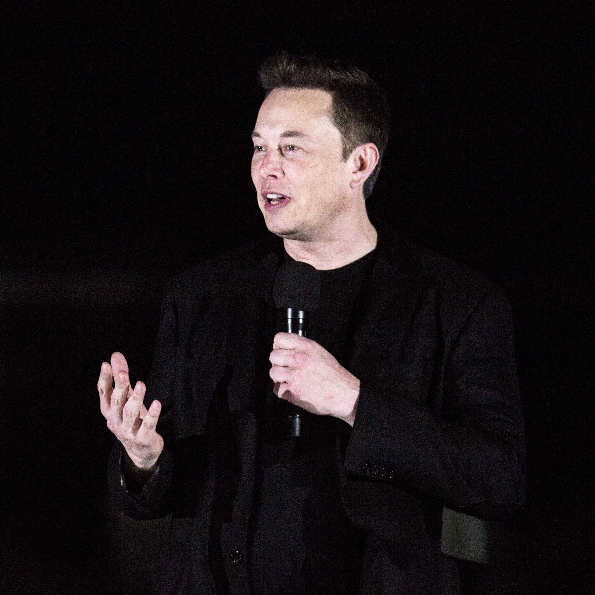
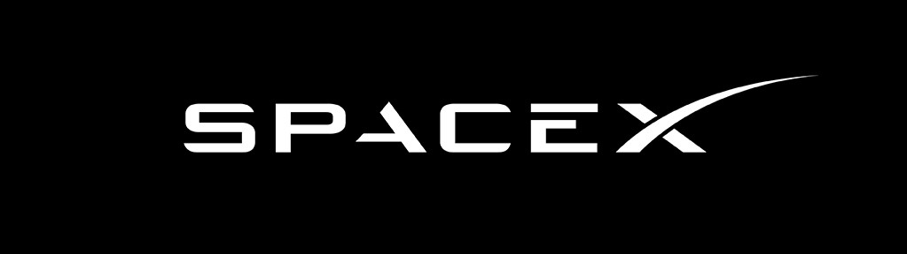
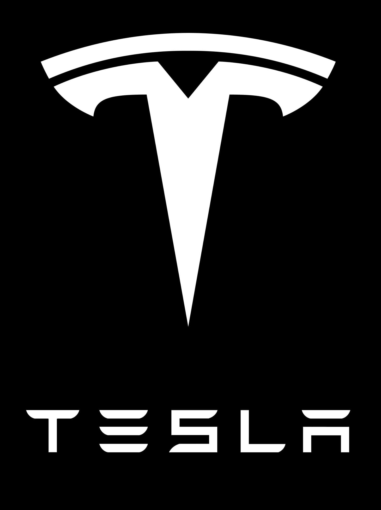

Elon Musk
American Entrepreneur
South African-born American entrepreneur
who co-founded the electronic-payment firm PayPal and
formed SpaceX, maker of launch vehicles and spacecraft.
He was also one of the first significant investors in,
as well as chief executive officer of, the electric
car manufacturer Tesla.
"When something is important enough, you do
it even if the odds are not in your favor."

Early Life
Musk was born to a South African father and a
Canadian mother. He displayed an early talent
for computers and entrepreneurship.At age 12
he created a video game and sold it to a computer
magazine. In 1988, after obtaining a Canadian
passport, Musk left South Africa because he was
unwilling to support apartheid through compulsory
military service and because he sought the greater
economic opportunities available in the United States.
PayPal, SpaceX and Tesla
Musk attended Queen’s University in Kingston, Ontario, and in 1992 he transferred to
the University of Pennsylvania, Philadelphia, where he received bachelor’s degrees
in physics and economics in 1997. He enrolled in graduate school in physics at Stanford
University in California, but he left after only two days because he felt that the Internet
had much more potential to change society than work in physics. In 1995 he founded Zip2,
a company that provided maps and business directories to online newspapers. In 1999 Zip2
was bought by the computer manufacturer Compaq for $307 million, and Musk then founded
an online financial services company, X.com, which later became PayPal, which specialized
in transferring money online. The online auction eBay bought PayPal in 2002 for $1.5 billion.

Musk was long convinced that for life to survive, humanity has to become a multiplanet species. However,
he was dissatisfied with the great expense of rocket launchers. In 2002 he founded Space Exploration
Technologies (SpaceX) to make more affordable rockets. Its first two rockets were the Falcon 1
(first launched in 2006) and the larger Falcon 9 (first launched in 2010), which were designed to cost
much less than competing rockets. A 3rd rocket, the Falcon Heavy (first launched in 2018), was designed
to carry 117,000 pounds (53,000 kg) to orbit, nearly twice as much as its largest competitor, the Boeing
Company’s Delta IV Heavy, for one-third the cost. SpaceX has announced the successor to the Falcon 9 and
the Falcon Heavy: the Super Heavy–Starship system. The Super Heavy first stage would be capable of
lifting 100,000 kg (220,000 pounds) to low Earth orbit. The payload would be the Starship, a spacecraft
designed for providing fast transportation between cities on Earth and building bases on the Moon and
Mars. SpaceX also developed the Dragon spacecraft, which carries supplies to the International Space
Station (ISS). Dragon can carry as many as seven astronauts, and it had a crewed flight carrying
astronauts Doug Hurley and Robert Behnken to the ISS in 2020. Musk sought to reduce the expense of
spaceflight by developing a fully reusable rocket that could lift off and return to the pad it launched
from. Beginning in 2012, SpaceX’s Grasshopper rocket made several short flights to test such technology.
In addition to being CEO of SpaceX, Musk was also chief designer in building the Falcon rockets, Dragon,
and Grasshopper.

Musk had long been interested in the possibilities of electric cars, and in
2004 he became one of the major funders of Tesla Motors (later renamed Tesla),
an electric car company founded by entrepreneurs Martin Eberhard and Marc
Tarpenning. In 2006 Tesla introduced its first car, the Roadster, which could
travel 245 miles (394 km) on a single charge. Unlike most previous electric
vehicles, which Musk thought were stodgy and uninteresting, it was a sports car
that could go from 0 to 60 miles (97 km) per hour in less than four seconds.
In 2010 the company’s initial public offering raised about $226 million. Two
yrs later Tesla introduced the Model S sedan, which was acclaimed by automotive
critics for its performance and design. The company won further praise for its
Model X luxury SUV, which went on the market in 2015. The Model 3, a
less-expensive vehicle, went into production in 2017.